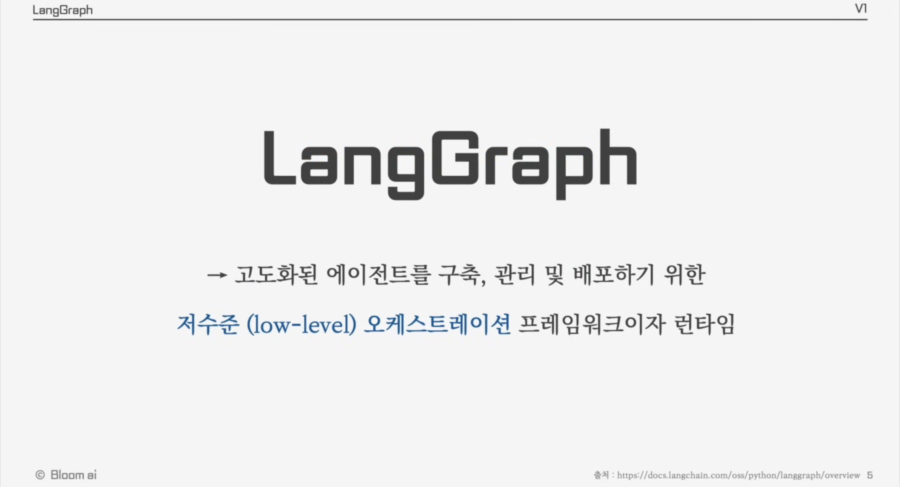
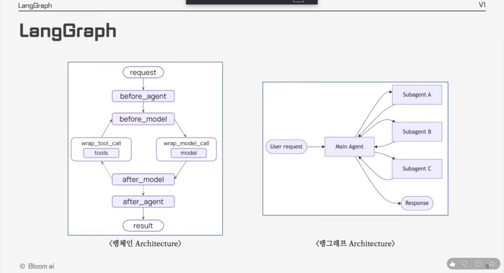
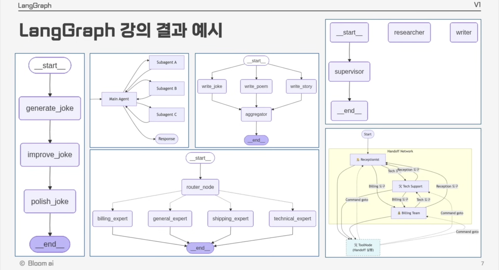
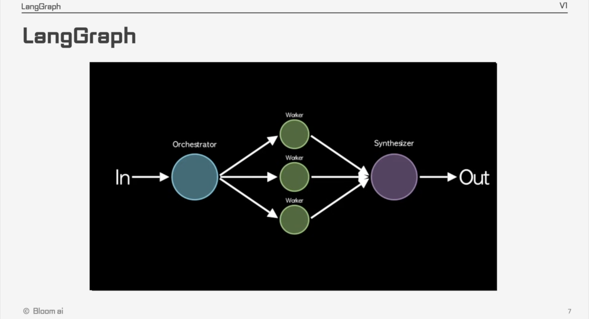
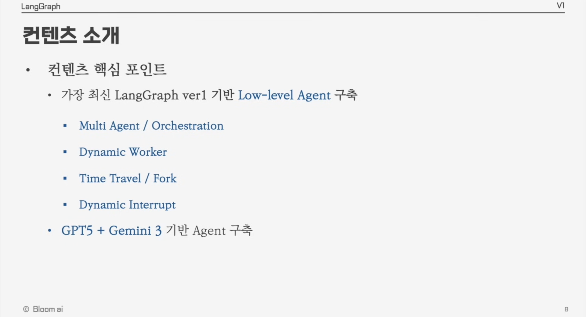
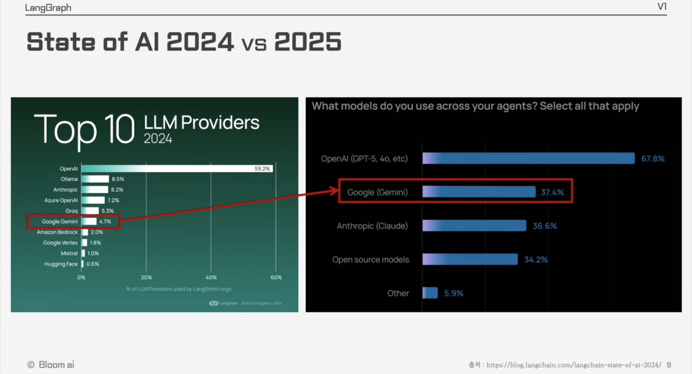

1. LangGraph 소개 — 오케스트레이션 프레임워크와 API 키 발급
실습 노트북(01.ipynb)을 열기 전에 먼저 읽는 강의 교재입니다.
LangChain으로 에이전트를 만들어 봤다면, 이번에는 그 에이전트가 더 정교하고 복잡한
비즈니스 로직까지 소화할 수 있게 해주는 LangGraph를 배웁니다. 코드를 짜기 전에
LangGraph가 무엇인지, LangChain과 무엇이 다른지, 5강에 걸쳐 무엇을 만들게 되는지
큰 그림을 잡고, 마지막에 모든 실습의 준비물인 Gemini API 키 발급까지 마칩니다.
5강까지 무엇을 배우는지 큰 그림
LangGraph란 무엇이고 LangChain과 뭐가 다른지
이 강의에서 실제로 만들 아키텍처들
Gemini API 키 발급받기
패키지 설치 → 실행 → 응답 확인
1-1. 강의 로드맵 — 5강까지 무엇을 배우나
지금 배우는 개념 하나하나가 다음 강의의 재료가 되는 구조이므로, 전체 지도를 먼저 그려두면 각 강의가 왜 필요한지 이해하기 쉽습니다.
| 강 | 배우는 내용 |
|---|---|
| 1강 (현재) | LangGraph의 개념과 실습을 위한 사전 준비 — Gemini API 키 발급 |
| 2강 | LangGraph 환경에서 에이전트를 구축하는 기초 문법 |
| 3강 | 기초 문법을 바탕으로 다양한 아키텍처의 에이전트 구축 — 오케스트레이터·워커, 에벨류에이터·옵티마이저 구조 |
| 4강 | 메모리를 지원하는 에이전트, 과거로 돌아가는 타임 트래블과 사건을 되돌리는 포크(fork) |
| 5강 | 멀티 에이전트 — 여러 에이전트가 서로 협업해 업무를 처리하는 서비스 구현 |
1-2. LangGraph란 무엇인가
랭그래프는 공식 문서에서 스스로를 이렇게 소개합니다.

docs.langchain.com/oss/python/langgraph/overview)핵심은 저수준(low-level)이라는 말입니다. 개발자가 개입할 수 있는 디테일의 깊이가 깊다는 뜻이고, 그만큼 에이전트를 섬세하게 컨트롤할 수 있다는 의미입니다.
랭체인 vs 랭그래프 — 블랙박스 vs 투명한 설계도
랭체인 에이전트가 내부 로직이 숨겨진 블랙박스였다면, 랭그래프는 에이전트가 어떤 고민을 하고 어떤 순서로 움직일지 개발자가 직접 그리는 투명한 설계도입니다. "알아서 해줘"라고 맡기는 대신, 복잡한 비즈니스 로직에 맞춰 에이전트의 행동을 통제하고 예측할 수 있게 됩니다.

before_agent → before_model →
(wrap_model_call / wrap_tool_call) → after_model → after_agent라는 정해진 생명주기 훅 안에서
커스터마이징합니다. 오른쪽은 랭그래프 — Main Agent가 상황에 따라
Subagent A/B/C 중 필요한 만큼을 동적으로 호출한 뒤 결과를 Response로 취합합니다.에이전트라는 개별 연주자들이 제멋대로 연주하지 않도록 지휘봉을 휘두르는 지휘자가 오케스트레이션 프레임워크입니다. 랭그래프는 State라는 공유 메모리를 보고 지금 검색이 필요한지, 코드를 실행할지, 결과가 부족해 처음으로 돌아갈지를 매 순간 판단합니다.
나아가 지휘자 에이전트가 요청의 성격과 양에 따라 동적으로 에이전트 팀을 꾸리고 업무를 분배하는 구조(동적 팀 구성), 그리고 에이전트가 막히면 실행을 멈추고 사람의 승인·수정을 받아 반영하는 다이나믹 인터럽트까지 — 이 강의에서 전부 직접 만들어 봅니다.
1-3. 이 강의에서 만들 것들 — 아키텍처 예시 미리보기
말로만 들으면 막연하니, 이 강의를 따라가면 어떤 결과물이 나오는지 먼저 봅니다.

| 패턴 | 구조 | 특징 |
|---|---|---|
| 순차 개선 | __start__ → generate_joke → improve_joke → polish_joke → __end__ |
하나의 결과물을 여러 노드가 순서대로 다듬는 가장 단순한 체인 |
| 동적 서브에이전트 호출 | User request → Main Agent → (Subagent A/B/C) → Response |
메인 에이전트가 상황에 따라 필요한 서브에이전트만 골라 부르는 구조 |
| 병렬 실행 후 취합 | __start__ → write_joke / write_poem / write_story (동시) → aggregator → __end__ |
여러 작업을 동시에 실행하고 결과를 하나로 합침 |
| 감독자(Supervisor) 패턴 | __start__ → researcher → supervisor → __end__ |
감독자 에이전트가 하위 에이전트들에게 작업을 지시하고 취합 |
| 라우터(Router) 패턴 | __start__ → router_node → billing/general/shipping/technical_expert → __end__ |
조건부 엣지로 알맞은 전문가에게 갈림길을 라우팅 |
| 핸드오프 네트워크 | Receptionist ↔ Tech Support ↔ Billing Team + ToolNode |
에이전트끼리 서로 업무를 인계(handoff)하며 협업 |
위 구조들은 전부 2강~5강에 걸쳐 하나씩 직접 만들어볼 것들입니다. "LangGraph 하나로 이런 것도 만들 수 있구나" 정도로만 담아두면 충분합니다.
Orchestrator · Worker · Synthesizer 패턴
여러 아키텍처 중에서도 특히 자주 쓰이는 패턴 하나만 짚고 넘어갑니다.

In → Orchestrator → Worker(병렬 3개) → Synthesizer → Out.
오케스트레이터가 작업을 여러 워커에게 나눠주면, 워커들이 병렬로 각자 몫을 처리하고,
신세사이저가 그 결과들을 하나로 합쳐 최종 결과를 내놓습니다.Orchestrator는 프로젝트를 쪼개 나눠주는 PM, Worker는 각자 맡은 부분을 처리하는 팀원, Synthesizer는 결과물을 하나의 보고서로 합치는 담당자입니다. 3강에서 직접 만들어 봅니다.
1-4. 컨텐츠 핵심 포인트 & 왜 GPT-5 + Gemini 3인가

| 항목 | 설명 |
|---|---|
| Multi Agent / Orchestration | 여러 에이전트를 지휘자가 조율하는 구조 |
| Dynamic Worker | 상황에 따라 동적으로 꾸려지는 작업자 팀 |
| Time Travel / Fork | 과거 상태로 되돌아가거나, 그 지점에서 다른 분기를 시도 |
| Dynamic Interrupt | 실행 중 사람의 승인·수정을 받아 반영하는 안전장치 |
왜 GPT-5뿐 아니라 Gemini 3인가
이 강의는 GPT-5뿐 아니라 Gemini 3로도 에이전트를 구축합니다. LangChain이 공개한 State of AI 2024와 2025를 비교하면, Gemini를 쓰는 개발자가 1년 사이 크게 늘었기 때문입니다.

blog.langchain.com/langchain-state-of-ai-2024)왼쪽은 단일 선택 비중, 오른쪽은 중복 선택 설문이라 1:1 비교는 어렵지만, 방향성은 뚜렷합니다 — Gemini를 쓰는 개발자가 눈에 띄게 늘었습니다. 그래서 실습에서도 Gemini와 GPT 모델을 모두 호출해 결과를 비교해 봅니다.
1-5. 실습 준비 — Gemini API 키 발급받기
본격적인 강의에 앞서 Gemini API 키를 발급받습니다.
- 구글 검색창에 "구글 AI 스튜디오"라고 검색한 뒤
aistudio.google.com으로 이동합니다. - 화면 우측 상단의 Get started 버튼을 클릭하고, 이용 약관에 동의한 뒤 계속을 클릭합니다.
- 좌측 메뉴에서 대시보드를 클릭합니다.
- 우측 상단의 API 키 만들기 버튼을 클릭합니다.
- 프로젝트가 없다면 프로젝트 만들기를 클릭하고, 이름을 Gemini 프로젝트 그대로 두거나 랭그래프 프로젝트 정도로 설정한 뒤 프로젝트 만들기를 클릭합니다.
- 만든 프로젝트를 선택한 뒤, 우측 하단의 키 만들기 버튼을 클릭하면 API 키가 생성됩니다.
- 생성된 키를 클릭하면 확인할 수 있고, 복사 버튼을 눌러 사용하면 됩니다.
발급받은 API 키를 코드에 그대로 적어 노트북을 공유하지 마세요. 실습이 끝난 뒤에는 키 값을 지우거나, Colab의 보안 비밀(Secrets) 기능을 사용하세요.
실습은 강의 영상 고정 댓글의 Colab 파일로 진행합니다. "1강 Gemini" 파일을 연 뒤 파일 → 드라이브에 사본 저장으로 본인 드라이브에 사본을 만들어 두면 자유롭게 수정하며 실습할 수 있습니다.
1-6. 코드 실습 — 첫 Gemini API 호출
패키지 설치
구글 AI 스튜디오 대시보드의 Documentation(문서) → 빠른 시작(Quickstart)에 있는 설치 명령어를 복사해 Colab 사본에 입력합니다.
# 패키지 설치
!pip install -q -U google-genaiColab에서 터미널 명령을 실행하려면 앞에 느낌표(!)를 붙입니다.
Shift + Enter로 실행해 google-genai 패키지를 설치합니다.
설치가 끝났다면 OS 환경 변수에 API 키를 등록합니다. AI 스튜디오에서 복사한 키를
따옴표("") 사이에 붙여넣고 실행합니다.
#os 환경변수 GEMINI API KEY 등록
import os
os.environ["GEMINI_API_KEY"] = ""API 실행 — 첫 요청 보내기
Gemini 문서의 요청 예시 코드를 그대로 가져옵니다. 모델은
gemini-3-flash-preview, contents에는 모델에게 하고 싶은 질문을 넣습니다.
여기서는 "랭체인과 랭그래프의 관계를 설명해줘"라고 요청해 보겠습니다.
# API 실행
from google import genai
client = genai.Client()
response = client.models.generate_content(
model="gemini-3-flash-preview",
contents="랭체인과 랭그래프의 관계를 설명해줘"
)
print(response.text)
실행하면 Gemini 3 모델의 응답이 response에 담기고, text 속성으로 꺼내
출력합니다.
랭체인과 랭그래프의 관계는 ... (Gemini가 생성한 설명이 이어집니다)
언어 모델의 답변은 매번 조금씩 다르게 생성됩니다. 위 출력은 시작 부분만 옮긴 예시입니다.
다양한 Gemini 모델
Flash 외에도 여러 모델을 호출할 수 있습니다. 전체 목록은
ai.google.dev/gemini-api/docs/models에서 확인합니다.
| 모델 | 특징 |
|---|---|
gemini-3-pro-preview | 촬영 시점 기준 가장 성능이 좋은 최신 모델 |
gemini-3-flash-preview | 이 강의의 기본 실습 모델 — 빠르고 비용 부담이 적음 |
gemini-2.5-flash | 이전 세대의 경량 모델 |
gemini-2.5-flash-lite | 2.5-flash보다 더 가벼운 모델 |
가장 성능이 좋은 모델을 쓰고 싶다면 model 파라미터만 바꾸면 됩니다.
# 가장 성능이 좋은 모델로 바꾸고 싶다면 model 파라미터만 교체
response = client.models.generate_content(
model="gemini-3-pro-preview",
contents="랭체인과 랭그래프의 관계를 설명해줘"
)Pro 계열은 더 똑똑하지만 느리고 비쌉니다. 실습은 짧은 질문을 수십 번 호출하므로 Flash로 충분하며, 앞으로의 실습도 Flash 기준으로 진행합니다.
📚 한 장 정리
LangGraph는 State라는 공유 메모리를 기반으로 에이전트의 사고 흐름을 개발자가 직접 설계할 수 있게 해주는 저수준 오케스트레이션 프레임워크다.
- LangGraph vs LangChain — 내부가 숨겨진 블랙박스 대신, 개발자가 사고 순서를 직접 통제하는 투명한 설계도.
- 오케스트레이션 — 지휘자가 여러 에이전트(연주자)를 조율하는 것. State를 보고 매 순간 검색·실행·재시도 여부를 판단한다.
- 이 강의의 네 축 — Multi Agent/Orchestration, Dynamic Worker, Time Travel/Fork, Dynamic Interrupt. GPT-5와 Gemini 3를 모두 사용해 비교한다.
- 실습 흐름 — Gemini API 키 발급 →
google-genai패키지 설치 → 환경 변수 등록 →client.models.generate_content()호출.